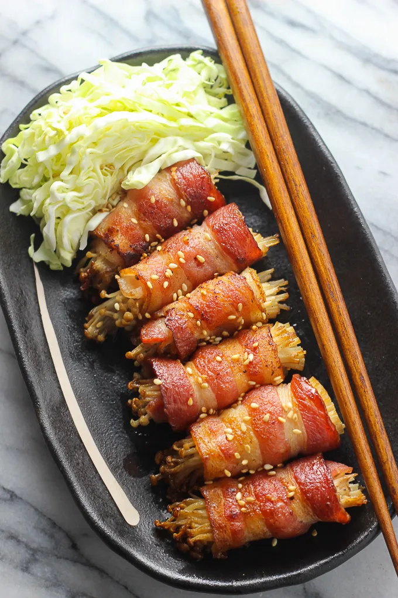

Bacon Wrapped Enoki Mushrooms

Description
Bacon Wrapped Enoki Mushroom Yakitori is a celebrated classic from Japan's culinary scene. This skewer delicacy combines the tender textures of enoki mushrooms encased in the savory richness of bacon. With its deeply flavorful profile, it serves as an appetizer or side dish to elevate any meal but can confidently stand as a main dish in its own right.
Ingredients
- 1 package (200g) of enoki mushrooms
- 1 three bacon slices
- 6 short bamboo toothpicks
- A handful roasted sesame seeds for topping (optional)
Steps
- Brush the loose dirts off the ends of enoki mushrooms with a paper towel, trim the ends off and set aside.
- Cut the bacon slices into halves.
- Pick a small bunch of enoki mushrooms and wrap them with half of the the bacon slices, secure by inserting a bamboo stick in the middle.
- Turn to medium heat, pan fry the wraps until all sides of bacon are crisp and browned.
- Transfer the bacon enoki wraps onto a plate, sprinkle on top roasted sesame seeds to serve.